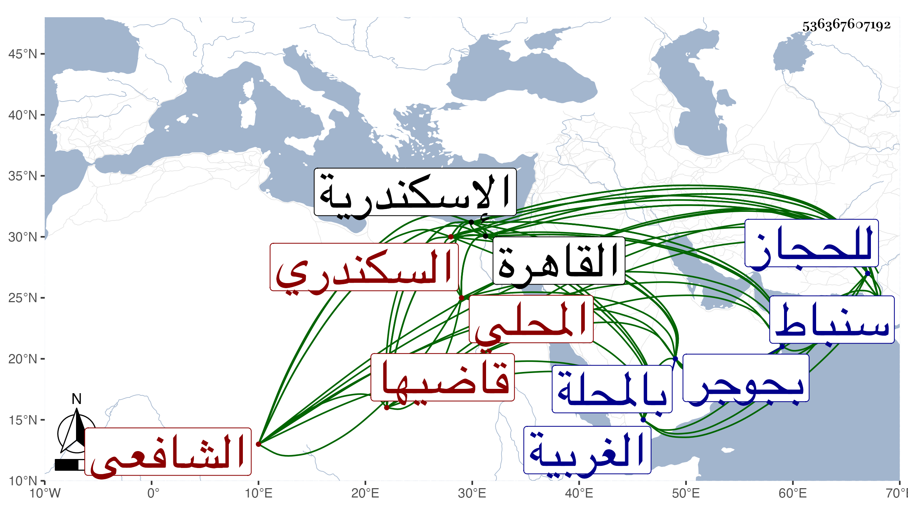

0902Sakhawi.DawLamic.ITO20230111-ara1.EIS1600.536367607192
Biography ID: 536367607192
434
أحمد بن محمد بن علي بن هارون بن علي الشهاب المحلي ثم السكندري قاضيها الشافعي والد البدر محمد ويعرف بالشهاب المحلي . ولد تقريبا قبل القرن بيسير بالمحلة من الغربية ونشأ بها فحفظ القرآن وتعانى التكسب بماء الورد ونحوه في بعض الحوانيت بل كان ينتقل إلى سنباط للابتياع على عطار بها من أصناف العطر وغيره واستنابه حينئذ الشمس الشنشي بجوجر وعملها في سنة أربع وعشرين ثم قارض بعض الأتراك وسافر في ذلك للحجاز وغيره واستمر إلى أن تزوج امراة من ذي اليسار وأثرى بما ورثه منها فخالط حينئذ الأكابر ولازم خدمتهم بماله ونفسه ، وناب عن شيخنا في بعض حوانيت القاهرة بالقرب من درب ابن النيدي ، وترقى بعناية الجمالي ناظر الخاص إلى قضاء الاسكندرية ببذل كثير سنة ثلاث وخمسين بعد الولوي السنباطي ولقيته بها وهو قاضيها وما علمت تعينه ورأيته يحفظ من شرح المنهاج للدميري الكثير ويسرده سردا حسنا بدون تلعثم ولكنه كان خبيرا بأمر دنياه عاريا إلا من المال مع سلامة صدر ومداراة وخدم بالأموال الجزيلة وكرم زائد حتى صار بيته محلا للوافدين من الفضلاء والمعتبرين . مات في توجهه من القاهرة إلى الاسكندرية بقرية أدكوبا لمزاحمتين في ليلة الثلاثاء ثالث عشر جمادى الآخرة سنة ستين ، وكان قد عزم على الحج وأذن له فيه فعاقه عنه المرض وغيره عفا الله عنه وعنا .
